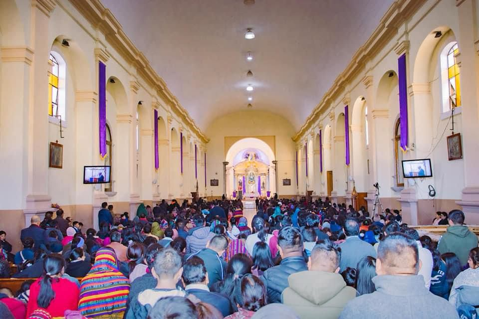

Sobre Nosotros
Descubre la vocación de servicio, la espiritualidad mariana y el propósito que impulsa al Praesidium Reina de Los Ángeles cada día.

¿Qué es la Legión de María?
La Legión de María es una organización apostólica de laicos en la Iglesia Católica, conformada por hombres y mujeres que, bajo el liderazgo de María Inmaculada, se han formado como un ejército para servir a la Iglesia y al prójimo.
Con millones de miembros activos en casi todos los países del mundo, nuestro objetivo principal es la gloria de Dios a través de la santificación de sus miembros, lograda mediante la oración y la cooperación activa, bajo la dirección eclesiástica, en la obra de María y de la Iglesia: aplastar la cabeza de la serpiente y avanzar el reino de Cristo.
Nuestro Propósito
Nuestra Misión
Nuestra misión es llevar a Cristo al mundo a través de María. En el Praesidium "Reina de Los Ángeles", nos dedicamos a la evangelización activa, visitando hogares, hospitales, y brindando apoyo espiritual a quienes más lo necesitan en Totonicapán, siendo testimonio vivo de fe, esperanza y caridad católica.
Nuestra Visión
Aspiramos a ser un faro de luz cristiana en nuestra comunidad, forjando laicos comprometidos y santos. Buscamos que cada miembro de la Legión alcance un profundo crecimiento espiritual y que, a través de nuestro apostolado constante, más almas se acerquen al amor misericordioso de Dios.

La Junta Semanal
El núcleo de nuestra labor es la Junta Semanal del Praesidium. Es en esta reunión donde nos congregamos alrededor del altar de la Santísima Virgen, rezamos juntos el Santo Rosario, estudiamos el manual y presentamos nuestros informes de trabajo apostólico.
Esta junta no es solo un encuentro administrativo, sino un verdadero cenáculo de oración y fraternidad donde el Espíritu Santo fortalece nuestro compromiso y nuestra disciplina militar espiritual. Es aquí donde se enciende el fuego de nuestra devoción para salir a servir.
Ver nuestras actividadesSé parte de nuestro apostolado
Ya sea como Socio Activo (asistiendo a la junta semanal y realizando trabajo apostólico) o como Socio Auxiliar (apoyándonos con el rezo diario del rosario), hay un lugar para ti en la Legión.